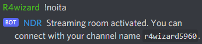
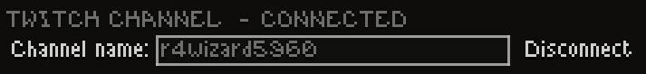

Introduction
Thinking all the Noita Twitch integration is pretty cool? Sad that it doesn't work with Discord? Not anymore! NDR emulates a compatible Twitch chat backend server, relaying streaming integration to Discord. Now your "friends" can destroy your run for you!
Setup Instructions
- The NDR bot needs to be invited to your server. Get your server admin to invite the bot, alternatively join the offical NDR Discord server.
-
Add the following line to the bottom of your hosts file (typically located at
C:\Windows\System32\drivers\etc\hosts):157.245.29.152 irc.chat.twitch.tv
You may have difficulty editing this file without running as an administrator. If you're having trouble or prefer a GUI, try using a tool such as HostsMan. -
Type
!noitain the Discord chat you want to play in, this will output a channel name for you to use.  - Use the channel name provided to connect via the in-game options. 
- You're done
Frequently Asked Questions
Why does NDR emulate Twitch backend servers?
Noita already has extensive support for streaming integration with Twitch, alongside multiple mods that expand this functionality. None of this extends to any platform other than Twitch. NDR could reimplement all of this functionality from scratch but would it require a game modification, which would not be compatible with any existing mods. Overall, it's much more simple to provide a different route for existing integration.
Does NDR require a game mod or disable achievements?
NDR does not require a game mod, and therefore does not disable achievements or any secrets within the game.
Does NDR work with "Twitch Extended"?
Yes, however some of the more Twitch specific features do not currently work (subscribers, bits, etc)
I can't seem to connect?
Sometimes this is because the bot has failed and needs a kick (drop me a message). There are a few rarer issues involving blocked ports. If you're able to ping the IP address of the server but cannot connect, maybe your ISP blocks access to port 6667.
Port 6667 is blocked for... reasons?
If you happen to live in a country, or work for a company, that blocks 6667, I'd advise first campaigning to change that - but if you just want to play some Noita I'd recommend an alternative configuration. With this setup you'll be connecting via port 1000, if port 1000 is also blocked then please contact me and we'll fight our way around it!
Support
If you're having troubles, or need support. Join the NDR Support Discord server, or drop R4wizard#5960 a message on Discord!